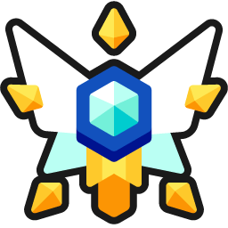
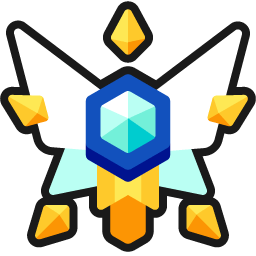
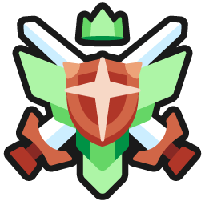

üèÜÔ∏èAnki leaderboard Wiki
- AnkiWeb Page | Code :
175794613 - üåêAnki Leaderboard Web : You can check the leaderboard on this website.
This add-on ranks all of its users by the number of cards reviewed today
This add-on is a customized version (fork) of the shutdown Anki LeaderBoard, originally created by Thore Tyborski and credit goes to him.
*I've enhanced graphics by adding countries, ranks, tooltips, etc. If you find it distracting you can disable it in the settings. (Config -> others tab -> add Pic country and league)*

*(This image is a sample so all user names are hidden.)*
- üèÜÔ∏èAnki leaderboard Wiki
- üìñHow to use
- üö®Report problems or requests
- üí°Frequently Asked Questions
- Q. Can I show the leaderboard without opening the add-on window?
- Q. How do I show the leaderboard after the review is finished?
- Q. Login keeps failing and sync is not finished, what should I do?
- Q. A user is cheating, what should I do?
- Q. How do I delete a group?
- Q. Why doesn't my Anki Streaks match the leaderboard streaks?
- Q. When will the new league start?
- Q. Why doesn't my XP match when I calculate it manually?
- Q. What is the reason for using the bonus instead of real retention?
- Q. Why doesn't the leaderboard sort order help my learning?
- üì• How do I install this add-on?
üìñHow to use
- This add-on ranks all of its users by the number of cards reviewed today, time spend studying today, current streak, reviews in the past 31 days, and retention.
- You can also compete against friends, join groups, and join a country leaderboard.
- You'll only see users, that synced on the same day as you.
üèÜLeague
- In the league tab, you see everyone who synced at least once during the current season. There are four leagues. (Alpha, Beta, Gamma, and Delta)
- The top 20% will be promoted, and the bottom 20% will be demoted. (Start -> Delta -> Gamma -> Beta -> Alpha)
üìÖSeason (League)
- A season lasts two weeks. You don't have to sync every day. For now I have it set to tally after 3 days and start a new league on the next Monday. (Because of time zone differences between countries and the time it takes mobile users to sync leagues on their PC)
üë•Group
- Groups is the function to create private leaderboards. e.g. if you create a group with your schoolmates or friends only users who know the password can use the leaderboard. Anyone can freely create groups. If you want anyone to be able to join your group please include the password in the group name.

- By default, there are public groups for Medicine, Language, and Pokemon. (password 1234)
- If you want to delete the group, please contact me.
- If you do not set a password, an error will occur.
ü§ùFriends
- You can add users to friends and display them like a group. (If you add a user as a friend, they will not be notified or see your name.)
- To add a user as a friend, double-click on the user's name and click the “Add friend” button or enter the name in Config.
üóùÔ∏èAccount
-
You can Sign-up, Log-in, Delete account, Log-out, Change user name, and Biography.
-
Click on the dropbox to toggle the account options.

-
üö®Note: Do not use a name or biography that would offend other users, I often receive such reports and users who do not correct them will be banned.
üìàXP formula
-
XP = days studied percentage x ((6 x time) + (2 x reviews x retention)) -
You have to study at least 5 minutes per day. Otherwise, this day won't be counted as “studied” (See this issue for more info).
üåêLeaderboard Web
- üåêAnki Leaderboard Web : You can check the leaderboard on this website. (past 24 hours)
üì∏Profile icon
I added function to display profile icons (prototype). Icons are displayed on the leaderboard and tooltip. If you find it distracting you can disable it in the settings: Config -> others tab -> add Pic country and league.
-
üì§Upload Icon:
-
You can upload your pictures to the server from the new menu.
-
Menu - > Leaderboard -> Upload profile image

-
Uploaded images are automatically edited -> Height 64px Width 64px Circle
-
Icons can be overwritten when uploaded again.
-
üö®Note:
- Icons will be displayed on leaderboards, tooltips, website leaderboards, etc. and will be stored in add-on as a cache (binary). If you are concerned about your privacy do not use it.
- Do not use photos that would be offensive to other users, I often receive such reports and users who do not correct them will be banned.
-
-
üìÅProfile Icons Cache :
- This function works by downloading icons from the server and storing them as a binary cache in the add-on's user_file folder.
- If there are a lot of icons on the server it may take a long time to download the cache. In this case the order of downloading is like this:
- Friends -> Country -> Group -> Global -> League
- Downloading of the cache of icons from the server is done only while the leaderboard window is open. If you close the window it will be interrupted.
- The cache of icons deleted from the server is auto deleted from the icon cache user_file folder of add-on.
- These functions run a bit slowly in the background, so they should not affect Anki's operation and your review. (Anki23+ is required)
- üö®Note:
- Each icon is about 7-10KB so 1,000 user icons will require about 10MB of cache, thus if the number of users suddenly increases too much the cache may increase too much (e.g. 10,000users->100MB). I plan to develop workarounds for this once the server icons actually increase.
Rank icons
-
I've enhanced graphics by adding countries, ranks, tooltips, etc.
-
If you find it distracting you can disable it in the settings: Config -> others tab -> add Pic country and league.

-
There are three types of rank icons on the leaderboard, each with 10 ranks in each of the leagues.
- Color (User's current league) :


 Alpha (Gold)
Alpha (Gold)
 Beta (Silver)
Beta (Silver)  Gamma (Sapphire)
 Gamma (Sapphire)- 

 Delta (Wood)
Delta (Wood)
- Type (Each Leaderboard) :
- Global (Hexagon)
- Friends/Country/Group (Diamond)
- League (Shield)
- Grades (Each Leaderboard):


 A+ (Top 10%)
A+ (Top 10%)

 A (Top 10-20%)
A (Top 10-20%)

 B+ (Top 20-30%)
B+ (Top 20-30%)

 B (Mid 30-40%)
B (Mid 30-40%)
 C+ (Mid 40-50%)
C+ (Mid 40-50%)

 C (Mid 50-60%)
C (Mid 50-60%)

 D+ (Lower 60-70%)
D+ (Lower 60-70%)

 D (Lower 70-80%)
D (Lower 70-80%) E (Bottom 80-90%)
E (Bottom 80-90%)

 F (Bottom 90-100%)
F (Bottom 90-100%)
- Color (User's current league) :
E.g. if a user is B (Mid 30-40%) on the global leaderboard the rank icon will be 
 but if the user's current league is Gamma the color will change and the rank icon will be
but if the user's current league is Gamma the color will change and the rank icon will be 

 .
.
Sync multiple devices
The default leaderboard does not allow multiple devices to log in at the same time. I added workaround for problem with multiple devices.

- Save data to AnkiWeb from your login device:
- Config -> Others tab -> Sync multiple devices -> Auto save this device's config dat to AnkiWeb[ON]
- Sync Anki decks.
- Sync Anki's deck on the second device.
- Download the config data on the second device:
- Sync multiple devices -> Download Config data from AnkiWeb
This saved data has nothing to do with the server's leaderboard data, so you can either delete it or not after a successful login. (Sync multiple devices -> Delete AnkiWeb config data)
üéÆÔ∏èGamification Mode

Enhanced gamification with more icons and numerical feedback. If you don't like it, you can disable it at once in the options(Config -> Oters tab). The code is not optimized yet, so there is a disadvantage for now that it increases the delay before the window is displayed.
Online Status

Display of yesterday's users. Added a function to display the scores of users who logged in yesterday and not only today. Users who logged in today will see a green dot. If you do not like this yesterday, you can optionally disable it (Show only today's users).
Review ProgressBar

This will reach 100% when the average number of reviews for the month is reached.
Alert Emoji
Added a function to display seconds in review. The 0-2 seconds/card is indicated by a patlamp. (Since the most common reason reported so far is that the review is too fast.) This function is only for display, so there is no penalty for now. If you are reviewing too fast for some reason, I recommend you to write the reason in Bio. (Because Bio will be displayed when someone reports a user.)
Time Ranks
The rank changes by the learning time. Maximum 12 hours.
Review Orb and Crystal

Colorful orbs and crystals are displayed based on the average number of reviews in the last 31 days (or 2 weeks of league). The orb will change color and shape for every 100 reviews, counting in 10 steps until 3000 reviews. After that, the orb counts every 1000 reviews up to a maximum of 10,000 reviews.
Streaks Tree
A tree grows after one week and can grow up a maximum of 3 years.
Cracker
Added a function that sometimes display cracker or cake by streaks.
Retention Weather

The weather icon changes according to the retention rate.
XP ProgressBars
Calculates and displays the level from the XP (League Only). The blue progress bar indicates the XP required for the next level.
Level calculation formula
Calculated to be level 100 at approximately the top of the Alpha League, for now. (EXP 20,000,000)
python: math.floor(math.sqrt(exp / 2000))
üîóRelated Add-ons
- üìåRearrange home addons
- üêªTidyAnkiBear - Select and hide Anki menu bar items
- üì±Anki Discord Sidebar - Chat room within Anki
üíñCredit
-
Original add-on : Anki LeaderBoard / Author : Thore Tyborski
- Contributions : khonkhortisan, zjosua, SmallFluffyIPA, Atílio Antônio Dadalto, Rodrigo Lanes, Abdo
-
Images: Crown icon /Freepik, flaticon.com, Person icon /iconixar, flaticon.com, Settings icon/Phoenix Group, Flaticon, Confetti gif/ Giphy
- Rank icons : Rhos @RhosGFX
- Star icon : Clip Art Library
üö®Report problems or requests
If you have any problems or requests feel free to send them to me.
- AnkiWeb (Rate Comment) : You can contact me anonymously, and AnkiWeb will send you an email when I reply, a high rating increases priority of development.
- AnkiForums : Official AnkiForums support thread, it's a good place for open discussion.
- Reddit (Fixed add-ons, or DM) : You can request me to repair broken Add-ons.
- Github (Issues) : Makes it easier to track problems. (I haven't created a repository yet.)
- Patreon (Direct Message) : Response will be prioritized.
üí°Frequently Asked Questions
Q. Can I show the leaderboard without opening the add-on window?
- The leaderboard can be displayed in Anki's Home by Config. (Leaderboard Config -> Settings -> Home screen -> Show the home screen leaderboard)
Q. How do I show the leaderboard after the review is finished?
- This feature is not yet available, you can sync when the review is finished by Config. (Leaderboard Config -> Settings -> General -> Sync when deck is finished)
- You can open the leaderboard with a shortcut key. (Shift + L)
Q. Login keeps failing and sync is not finished, what should I do?
- Sometimes bad internet communication can prevent the connection, please try again later.
- It may work if you remove the add-on and reinstall it.
Q. A user is cheating, what should I do?
There are two ways to Hide or Report a user.
1. Hide user
Basically if you find such users distracting, please hide them.
- Double click on user name -> Hide user
2. Report
These are some of the most commonly reported examples of suspected cheats:
- Review time is too fast
- Retention is too high
However these may not be cheats because learner use Anki in different ways, these are possibilities:
- The learner may be reviewing a batch of cards before the exams.
- The learner reviews a lot of easy cards.
- The Learner is delayed review and trying to catch up.
- The learner may be using Anki's option to shorten the time to record.
In my opinion these learning methods are not malicious so they do not deserve a ban (perhaps the calculation method needs to be changed).
In any way we lack development resources yet at the moment, so basically please address this problem with hide user.
Q. How do I delete a group?
- The function to delete a group is not yet developed, please contact me.
Q. Why doesn't my Anki Streaks match the leaderboard streaks?
If you customized “Next day starts at” you will need to set it manually. Please check if these settings match:
- Leadearboard: Config -> Settings -> General -> The next day starts [...] hours past midnight
- Anki: Tools -> Preferences -> Review -> Scheduler -> Next day starts at [...]
Q. When will the new league start?
- For now I have it set to tally after 3 days and start a new league on the next Monday. Because of time zone differences between countries and the time it takes mobile users to sync leagues on their PC.
Q. Why doesn't my XP match when I calculate it manually?
-
The cause of this problem is that the XP formula is partially omitted.
- days studied percentage : This value is calculated as a number (0-100), not percentage (0%-100%).
- Retention :
- Retention is bonus is added, so it will be a little larger than the actual value. (e.g. 70% -> 85%, 40% -> 55% )
Retention Bonus: 85%-100% -> 100% 70%-84% -> 85% 55%-69% -> 70% 40%-54% -> 55% 25%-39% -> 40% 10%-24% -> 25% 0%-9% -> 0% - This value is first calculated as a number (0-100) and then converted to a percentage (0%-100%).
- Retention is bonus is added, so it will be a little larger than the actual value. (e.g. 70% -> 85%, 40% -> 55% )
Q. What is the reason for using the bonus instead of real retention?
The reason for this is that retention is calculated by ranges.
Basically the retention rate recommended by Anki is 80-90%, and dedicated learners may aim for 90-95% or so. It is possible to aim for 95%-100%, but this is not efficient because the learning workload increases significantly, like this:

This means that Anki retention rates are not recommended to be perfect or as high as possible, and possibly slightly lower is more efficient for learning.
So I think 85% would be a reasonable range to be in the same range as 100%, 85% users do not need to go higher, and 95%+ users can lower the retention rate to make learning more efficient and not affect XP. (If the retention rate is changed to the same value as it is, users may make learning inefficient by making the retention rate as high as possible.)
Q. Why doesn't the leaderboard sort order help my learning?
For now there are workarounds for these, try these settings if you haven't already:
[1] Sorting
You can change the sort order of the leaderboards. (Today's Reviews, Today's Time, Streak, Reviews in the past 31 days, and Retention)
e.g. Sort by past31days to exclude all users who reviewed a lot just today.
Config -> Settings -> Genearl -> Sortby
[2] League
Leagues are regularly scheduled for 2 weeks and are calculated by XP, not by reviews. It is a system that requires long term learning, so short term learners will not be able to get to the top. So far about half of the top rankers are medical students, and language learners seem to be a relatively small minority.
[3] Changing the default leaderboard
You can change the default leaderboard to be displayed. (Global, Friends, Groups, and Leagues)
Config -> Settings -> Genearl -> Default Leaderboard
e.g. if you are only interested in groups of medical students you can set the group of medical students as your default leaderboard. The medical students group has the most active users 334. (Languages have 136 users, 2024-11-18). The number of active users is small for now but the total number of active users is increasing by about 1000 every few months, so I guess it will be solved in the long run.
[4] Hide users
If there are users who are offensive to you, you can hide them by using the hide user option: Double-click on the user's name
[5] Report Users
If you report a user you can contact me and I can ban the offending user, basically I do not reply to reports but I read all of them: Double click on the user's name
But even if we use all of these functions I think it is still insufficient, so currently the functions under development are like these:
[1] XP enhancements
Use XP or score in global leaderboards.
[2] Display of past history
e.g. Leaderboards for yesterday, this week, a month, all periods. Leagues for groups, history.
[3] Auto hide users in bulk
e.g. Hide users who review too quickly in bulk, hide all users using offensive words, hide all users who have joined a particular group.
[4] Enhancement of ban function
e.g. Make it impossible to avoid banning by re-registering, introduce stealth BANs.
All of these functions are technically developable but will still take some time to develop, this free add-on is developed and maintained by me as an individual free volunteer(In short it's just a hobby when I get bored of it it's over), and basically fixing bugs and supporting the latest Anki is a high priority.
üì• How do I install this add-on?
- Copy and paste the add-on code (
175794613) into Anki and you can install it. ( Menu -> Tools -> Add-ons -> Get Add-ons -> Code [ add-on code ] ) - When I develop bug fixes, create new features, or compatibility for New Anki, I will notify you and you can install it.
- The leaderboard is a special add-on that uses the server, unless I manage it regularly it will be broken in a few months, so If you like this add-on please support my volunteer development by rating, sharing, and donating. Thank you!

{kind=link}